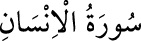

<a name=10225></a><br/>
<b>76- el-İNSAN SÛRESİ</b><br/>
<i><b>Mekke’de veya Medine’de nâzil olduğuna dâir rivâyetler vardır; 31 âyettir. Adını ilk</b></i><br/>
<i><b>âyetinde geçen “el-insân” kelimesinden almıştır. “Hel etâke”, “ed-Dehr”, “el-</b></i><br/>
<i><b>Ebrâr” ve “el-Emşâc” isimleri ile de anılır.</b></i><br/>
